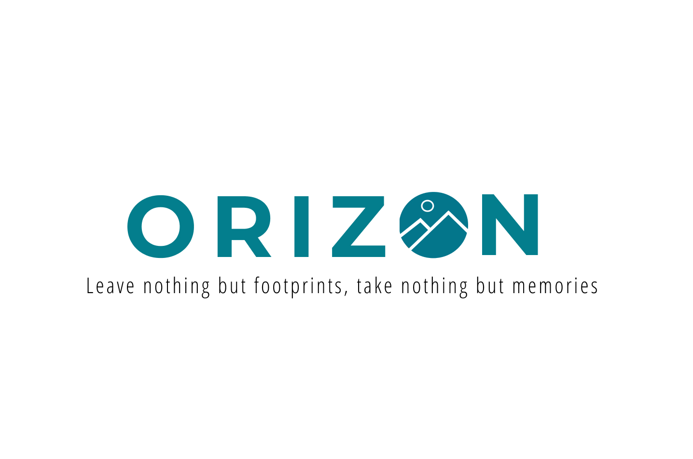

Processo UX
La progettazione di una esperienza utente è fondamentale per rendere un sito accessibile e usabile da chiunque nel web. Bisogna aver cura dei dettagli e delle esigenze degli users.

Processo UI
Dare un tocco di colore e uno stile grafico al progetto, rende la visibilità del progetto più gradevole e accessibile all’utente.

Grafica
E’ il fondamento per la progettazione di una brand identity di successo: dalla progettazione del logo, alla scelta dei colori fino alla creazione di concept per la comunicazione social. I dettagli sono fondamentali per la realizzazione di un prodotto che fa la differenza.
